Melissa Gymrek
Principal Investigator

Sharona Shleizer-Burko
Lab Manager (w/ Goren Lab)
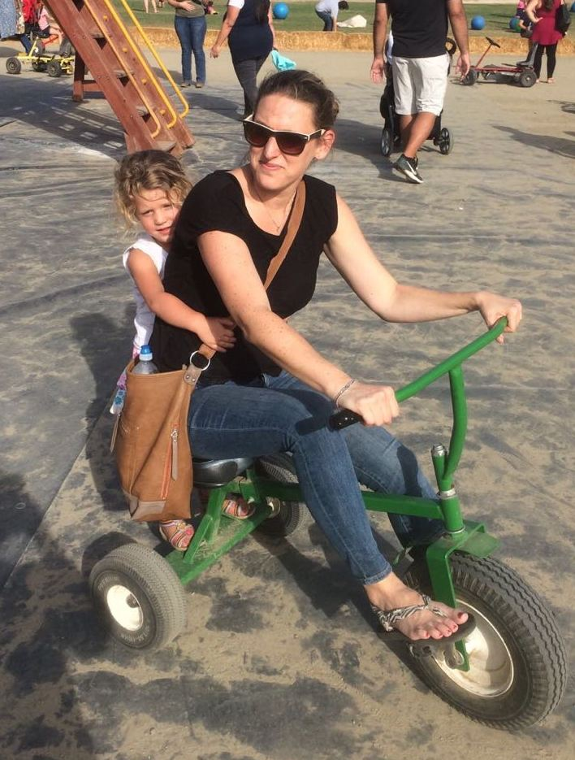Dorit Rousseau
Administrative Asst. (w/ Goren Lab)
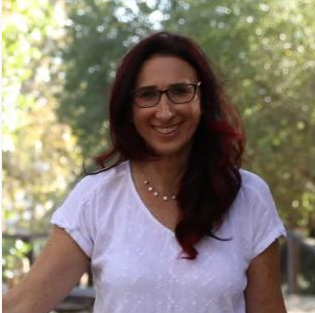Nichole Ma
Technician

Melissa GymrekPrincipal Investigator
|
Sharona Shleizer-BurkoLab Manager (w/ Goren Lab)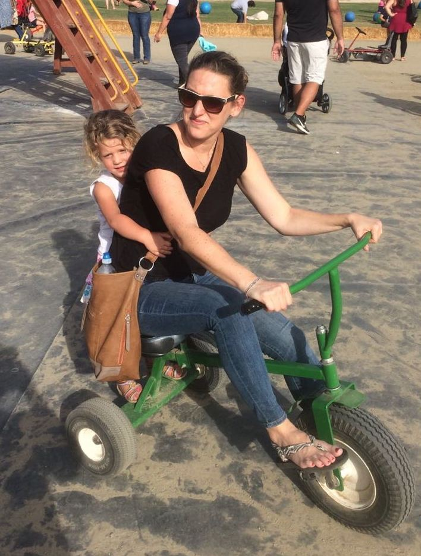 |
Dorit RousseauAdministrative Asst. (w/ Goren Lab)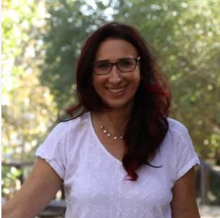 |
Nichole MaTechnician
|
Mikhail Maksimov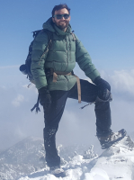 |
An ZhengCSE (w/Su Lab)
|
Shubham SainiCSE
|
Nima MousaviECE |
Cynthia WuBISB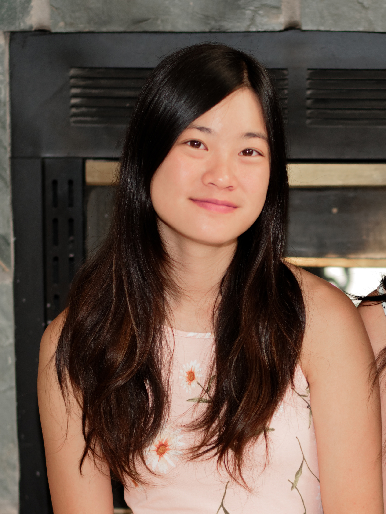 |
|
Jonathan MargoliashCSE
|
Michael LamkinCSE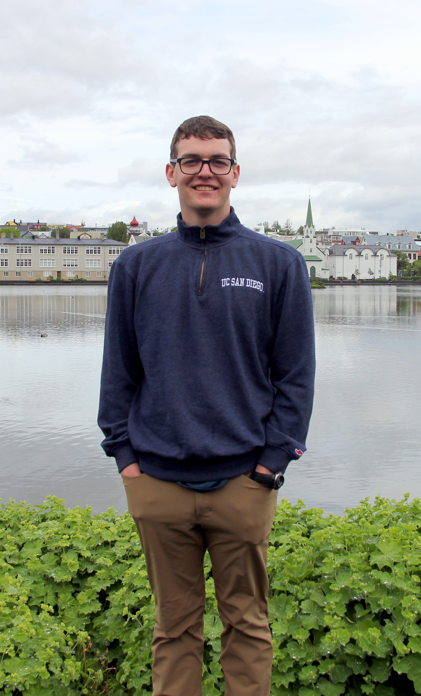 |
|
|
|
Hanqing Zhao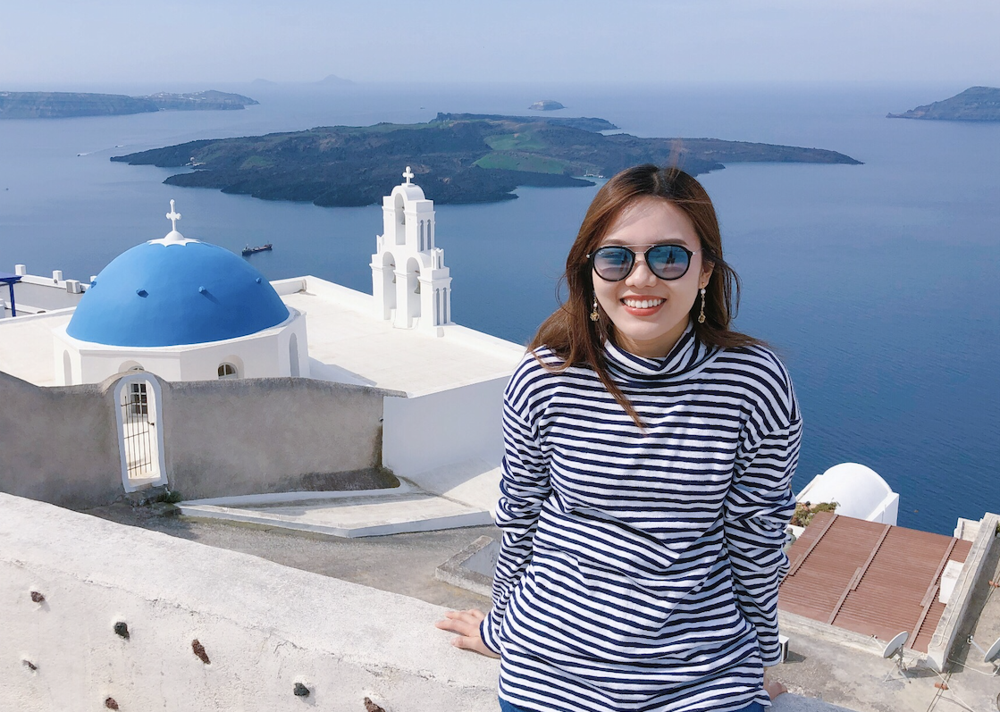 |
Bonnie Huang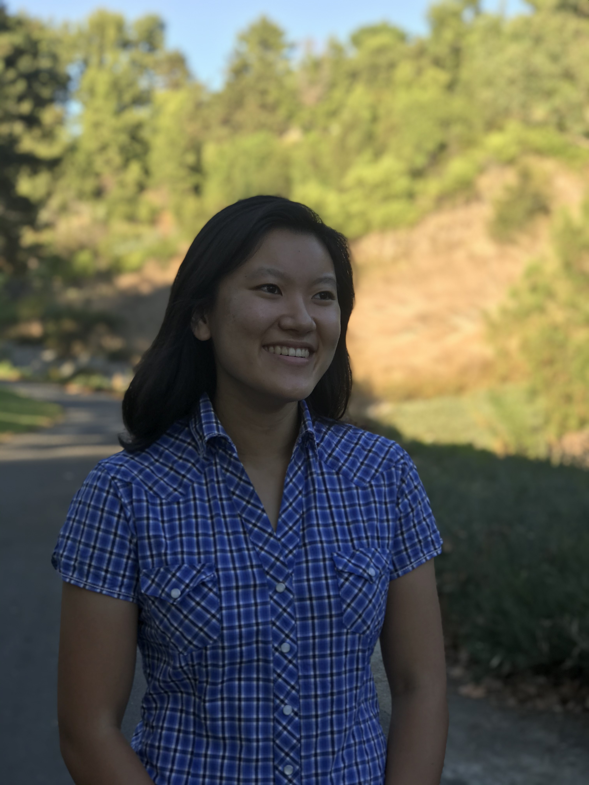 |
Andrew Shen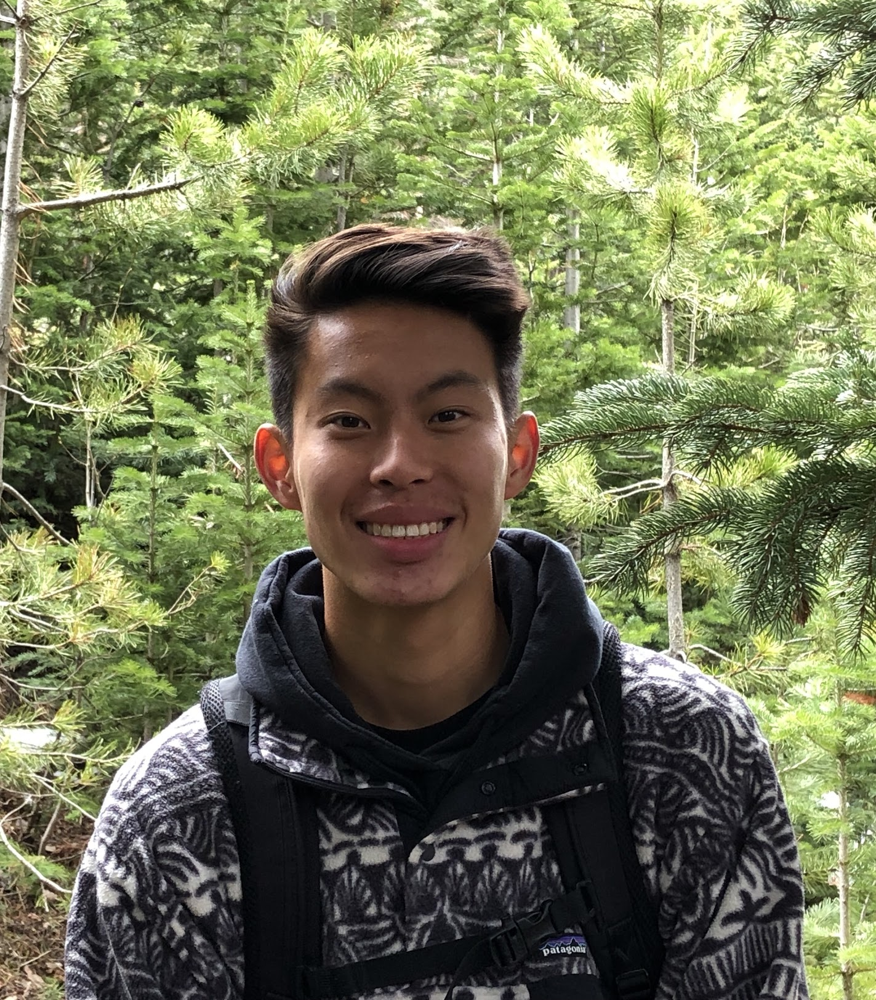 |
Ye Jin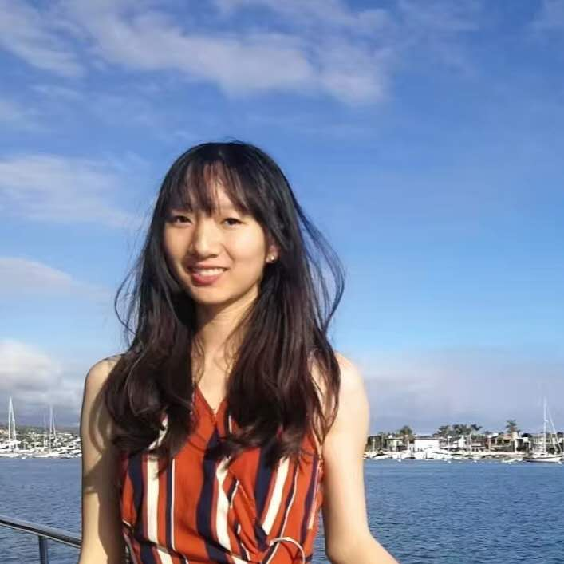 |
Yuren Dong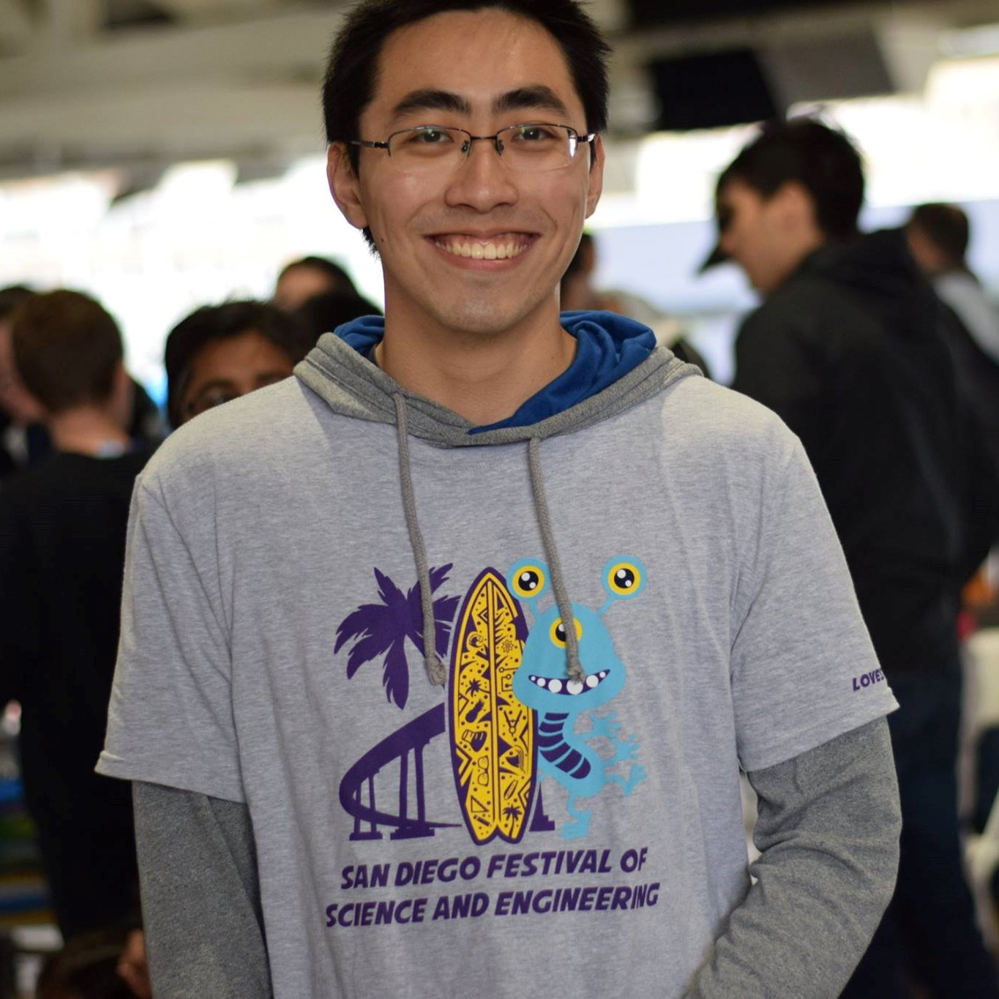 |
Ziyang (Charles) Zhang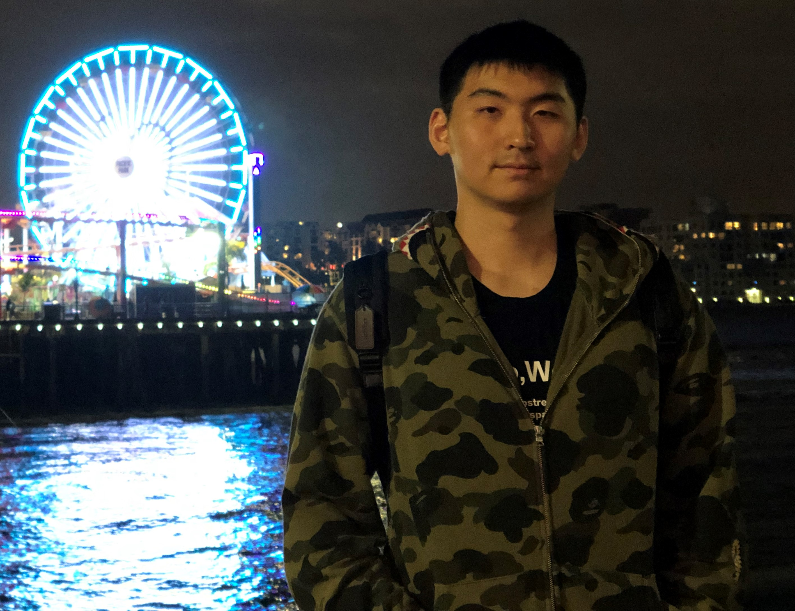 |